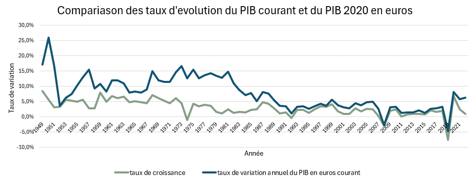

Sur le long terme, la dimension économique de la France et son niveau de vie global ont considérablement augmenté, malgré des perturbations conjoncturelles récentes. L'objectif de cette SAÉ est de mener une analyse approfondie de la croissance économique française depuis 1949 à partir des données officielles de l'INSEE.
Ce projet met en œuvre les concepts fondamentaux de la macroéconomie en nettoyant, traitant et valorisant une série chronologique de plus de 70 ans. Il s'attache notamment à formaliser les concepts de valeurs réelles et nominales pour isoler l'impact de l'inflation sur les indicateurs de richesse nationale.
Pour analyser rigoureusement la série chronologique, deux approches de calcul de la richesse ont été exploitées et calculées sur l'intégralité de la chronique :
Les calculs d'évolution globale mettent en lumière un décalage massif entre la croissance nominale et la performance productive concrète du pays :
Le calcul du déflateur global du PIB (1,33, soit une estimation de 113,3% sur la période) confirme que le PIB nominal a évolué à un rythme nettement plus soutenu que la production réelle, validant le rôle prépondérant de l'érosion monétaire historique.
L'analyse globale a été ajustée à l'échelle humaine en intégrant l'évolution démographique de la France sur la même période.
En ramenant la production par tête, les coefficients multiplicateurs du PIB par habitant ont été isolés :
| Indicateur par Habitant (1949 - 2023) | Coefficient Multiplicateur | Signification Macroéconomique |
|---|---|---|
| PIB par habitant en € courants | 132,83 | Multiplication nominale du revenu moyen par habitant |
| PIB par habitant en € 2020 (Réel) | 5,57 | Progression réelle du niveau de vie physique individuel |
À l'instar des agrégats globaux, l'inflation explique la distorsion entre ces deux indicateurs. On observe néanmoins que les écarts sont légèrement plus resserrés sur les indicateurs par habitant que sur le PIB global. L'utilisation du PIB par habitant en volume s'impose comme l'indicateur le plus vertueux et fiable pour comparer l'évolution du niveau de vie réel entre plusieurs puissances économiques.
L'aboutissement de cette SAÉ a consisté à concevoir une infographie de synthèse synthétisant les grandes étapes de la trajectoire économique française depuis 1950 (des Trente Glorieuses aux mutations post-crises).

Ce projet d'analyse temporelle et de valorisation des données m'a permis de valider les compétences suivantes :
Capacité à extraire, nettoyer et restructurer des séries temporelles historiques de long terme issues des bases de données de l'INSEE.
Maîtrise complète des outils de déflation statistique pour neutraliser l'effet de l'inflation et isoler les indicateurs en volume (PIB réel vs PIB nominal).
Création de visualisations graphiques avancées pour vulgariser l'évolution historique des agrégats économiques auprès d'un public non expert.